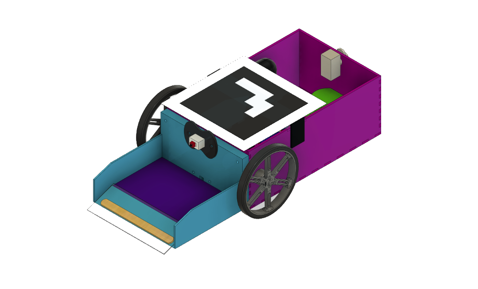
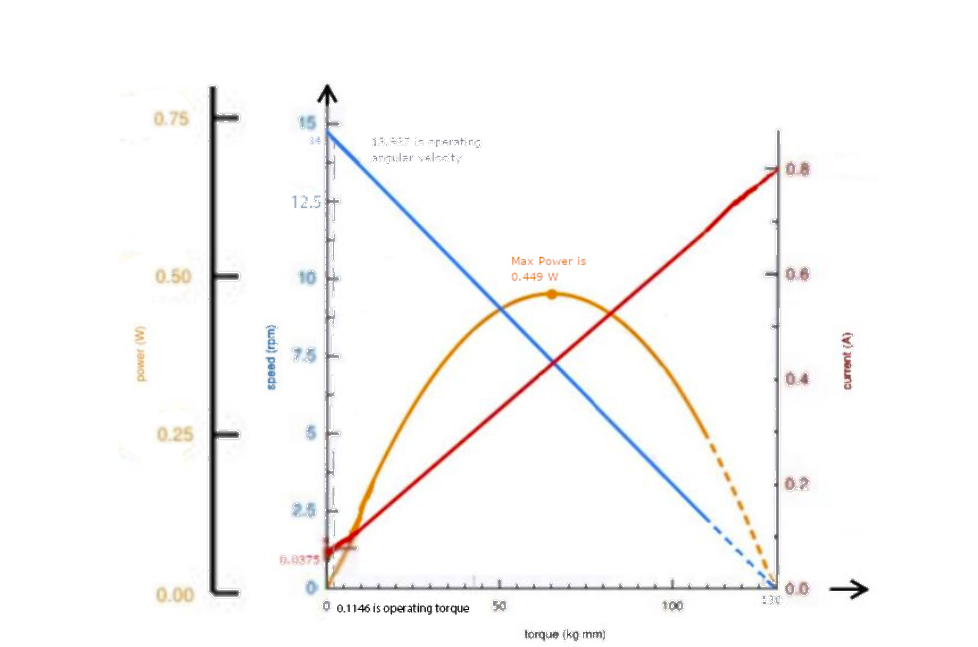
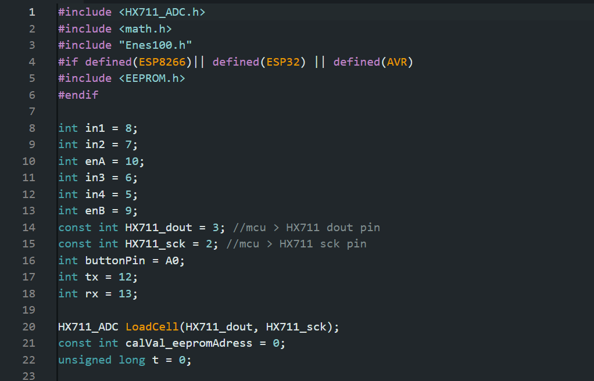
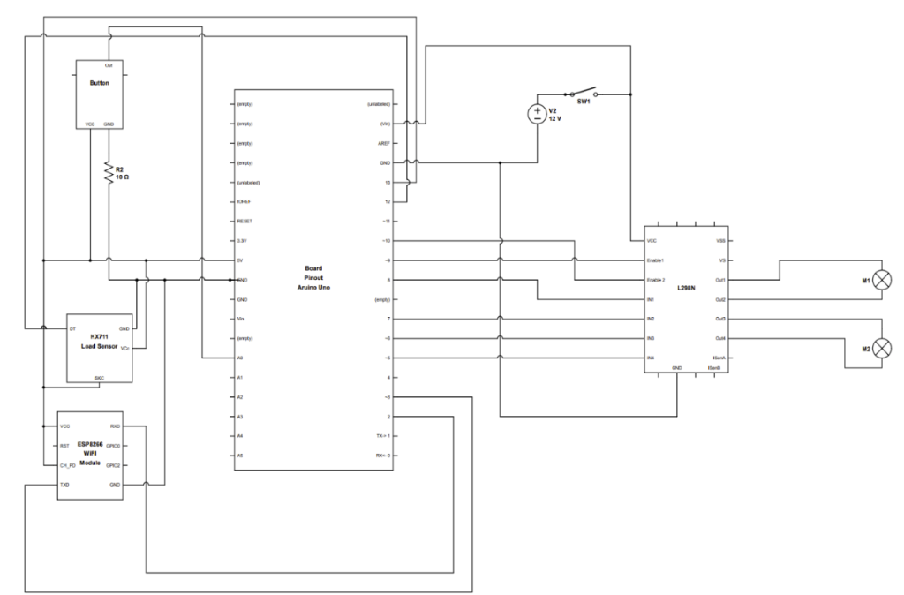
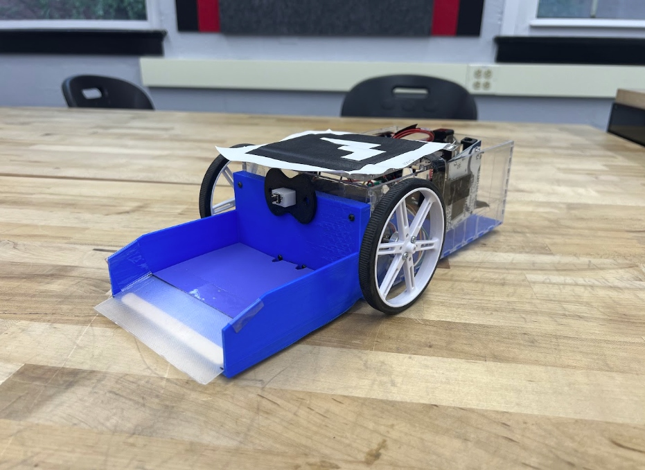
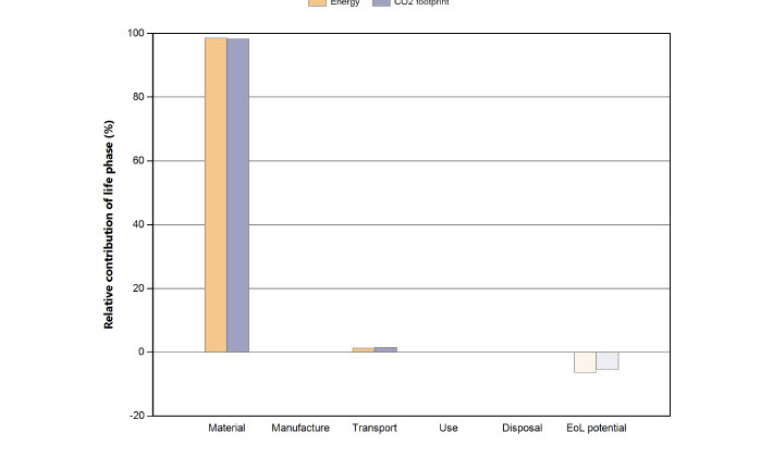
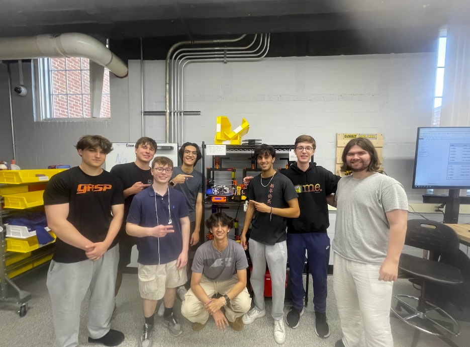

Project Summary & Mission Constraints
In a rigorous 12-week design and fabrication cycle for the University of Maryland ENES100 robotics competition, our 8-person interdisciplinary engineering team designed, modeled, and manufactured an autonomous ground vehicle from scratch.
The mission required the vehicle to autonomously deploy from an unmapped, randomized starting coordinate, navigate a multi-obstacle terrain arena, locate and capture an unknown foreign specimen, measure its mass, and classify its material composition (compressible foam vs. rigid plastic) within a strict 5-minute operational window with zero human intervention.
By grounding every design choice in first-principles engineering—from free-body kinematic torque derivations to simplified overhead optical tracking and deterministic state machine firmware—the vehicle completed all competition mission objectives with a perfect 120/100 score, securing 1st place overall out of 40+ engineering teams.
Key Contributions
- Derived first-principles free-body torque equilibrium equations to select dual Pololu 12V brushed DC gearmotors (#3497), achieving an operating speed of 11.90 cm/s at 24.06 N-cm torque with a zero-radius differential pivot steering geometry.
- Designed and laser-cut a rigid, lightweight 14.04" × 6.83" acrylic chassis (1.09 kg total mass) utilizing interlocking finger tabs and a rapid-iteration passive friction scoop that achieved 100% specimen capture reliability.
- Programmed deterministic C++ finite state machine (FSM) firmware on an Arduino Uno, integrating HX711 dual half-bridge strain gauge mass sampling and tactile force deflection material identification with overhead ArUco marker tracking.
- Quantified complete lifecycle environmental metrics using Granta EduPack Eco Audit (458 MJ energy, 27.6 kg CO₂ footprint), demonstrating an end-of-life recovery credit of -29 MJ and -1.49 kg CO₂ through modular component reuse.
Mechanical Design & Drivetrain Kinematics
Every mechanical subsystem was engineered from first principles to balance structural rigidity, center of mass, and torque demands within a tight dimensional envelope.
Tabbed Chassis Architecture
Fabricated a 14.04" × 6.83" chassis from 3 mm laser-cut acrylic using tight-tolerance interlocking finger tabs and reinforced taped seams, creating a lightweight, rigid 1.09 kg unibody frame capable of sustaining continuous operational impact.
- Frame Dimensions: 14.04" × 6.83" (356.6 × 173.5 mm)
- Material: 3 mm Extruded Acrylic Sheet
- Joinery Technique: Interlocking Tabs & Taped Seams
- Total Vehicle Mass: 1.09 kg (Fully Integrated)

Torque & Speed Kinematic Modeling
Derived free-body equilibrium equations to calculate required motor torque under rolling friction and ramp inclines, selecting dual Pololu 12V brushed DC gearmotors (#3497) paired with 90 mm rubber wheels and a rear ball caster for zero-radius differential pivot steering.
- Drive Motors: 2× Pololu 12V Brushed DC (#3497)
- Operating Torque: 0.1146 kg·mm (24.06 N-cm at Gearbox)
- Operating Speed: 13.987 RPM (11.90 cm/s Ground Speed)
- Peak Motor Power: 0.449 W (at 65 kg·mm Torque)
Embedded Electronics & Sensor Subsystems
Deterministic C++ control logic and custom sensor circuits eliminated runtime fragility while ensuring real-time specimen mass sampling and material classification.

Deterministic C++ Finite State Machine
Structured deterministic control logic on an Arduino Uno executing a sequential state machine (Localize → Wall-Hugging Drive → Ramp Capture → Tactile Density Check → HX711 Weight Sampling → Return).
- Microcontroller: Arduino Uno (ATmega328P)
- Libraries: HX711_ADC, Enes100, EEPROM
- Global Tracking: Overhead ArUco Vision ("Eye in the Sky")
- Trajectory Routine: Pre-Programmed Wall-Hugging Paths

Circuit Schematic & Sensor Wiring
Complete electrical schematic detailing the Arduino Uno pinout interfacing the L298N dual H-bridge motor driver, 12V power distribution with master switch SW1, HX711 strain gauge amplifier, ESP8266 Wi-Fi module, and tactile push-button classification switch.
- Mass Subsystem: Dual Half-Bridge Gauges + HX711 ADC
- Material Classifier: Tactile Deflection Switch (10 Ω Pull-Down)
- Motor Driver: L298N Dual H-Bridge (Pins 5, 6, 7, 8, 9, 10)
- Power Rail: 12V 2000 mAh NiMH Pack + SW1 Switch
Problem Solving & Lifecycle Sustainability
Iterative mechanical problem-solving eliminated complex active linkages, while quantitative eco-audits evaluated the environmental lifecycle footprint.

The Friction Ramp Pivot
Initial multi-linkage motorized grabbers proved overly complex and prone to binding, while early 3D-printed ramp angles were too steep and snagged on the arena floor's Velcro seam. We replaced active servos with a passive friction scoop, extending the ramp with a flexible recycled plastic lip and popsicle-stick base support to shallow the entry angle—achieving 100% capture reliability without a 12-hour reprint delay.
- Initial Challenge: Active Grabber Complexity & Ramp Snags
- Engineering Solution: Passive Friction Scoop + Flexible Lip
- Capture Reliability: 100% Capture Success Rate
- Turnaround Time: Zero-Downtime Rapid Prototyping

Granta EduPack Eco Audit
Quantified total lifecycle environmental impact using Granta EduPack Eco Audit, evaluating material extraction, manufacturing, transportation, usage, and disposal. Demonstrating that modular component reuse (motors, microcontroller, wheel hubs, battery) yielded an end-of-life recovery credit of -29 MJ energy and -1.49 kg CO₂.
- Total Energy Demand: 458 MJ (Full Lifecycle)
- Carbon Footprint: 27.6 kg CO₂ Equivalent
- End-of-Life Recovery: -29.0 MJ Energy & -1.49 kg CO₂
- Circular Design: Modular Reuse of High-Energy Hardware
Engineering Team & Lab Prototyping
Collaborated across mechanical design, circuit layout, firmware development, and testing within an 8-person interdisciplinary team to secure 1st place overall.
